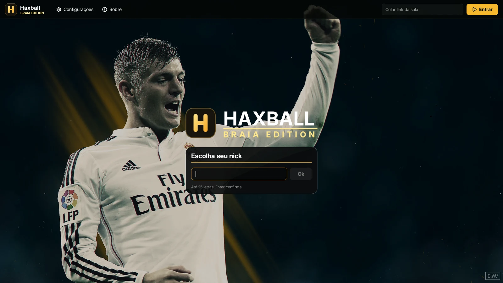
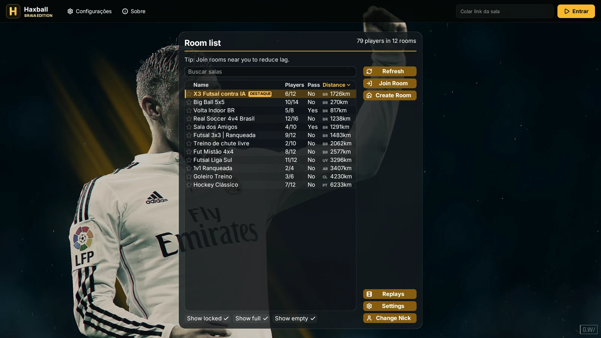
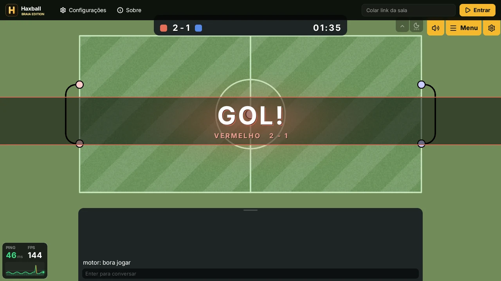
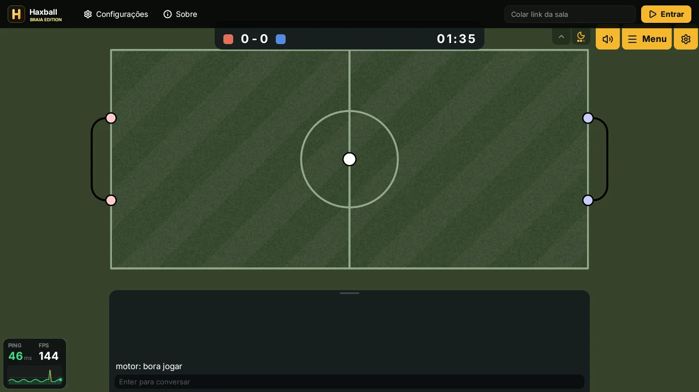

Leve de verdade
Feito do zero, sem navegador por baixo: abre na hora e roda liso até em PC fraco.
Um app feito do zero, sem navegador por baixo: abre na hora, roda liso em qualquer PC e traz a lista de salas, os replays e o chat que o HaxBall não tem.
Grátis · Windows 10 e 11 · Ubuntu, Mint e Debian

Busca, favoritas, distância até cada sala e a sala em destaque no topo.

Do nick à partida em um minuto: wallpapers, lista de salas, configurações e jogo.
Pensado para quem joga todo dia: menos tempo procurando sala, mais tempo em campo.
Feito do zero, sem navegador por baixo: abre na hora e roda liso até em PC fraco.
Busca sem ligar para acentos, favoritas, distância até a sala e link direto no topo.
Nome, senha e limite de jogadores, pública ou escondida da lista.
Grave a partida e assista depois com zoom, ou abra o arquivo com dois cliques.
Emojis coloridos, @nome e #id que completam sozinhos, atalhos e mutar só para você.
Modo escuro em três níveis e a barra de cima escondida para ver só o jogo.
Três estilos de som para chute, gol e chat, com volume separado.
FPS do monitor ou ilimitado, e um cartão com o ping em tempo real.
O app avisa quando sai versão nova e se atualiza sozinho.
As mesmas salas e a mesma física do HaxBall, com uma tela de gol nova e o campo do jeito que você preferir.


Baixe o instalador do seu sistema. O link sempre traz a versão mais nova.
.deb (Ubuntu, Mint, Debian).sudo apt install ./haxball-braia-edition_*.deb